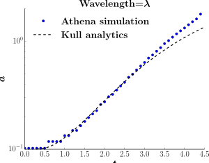

Rayleigh-Taylor Instability
Examining the physics behind the most damaging phenomena in laser fusion
The Rayleigh-Taylor instability (RTI) is believed to be the culprit for the failure of current laser fusion experiments - it rips the fuel apart before it can burn. I'm designing a 3D simulation to understand how it differs from 2D.
Skills employed: Hydrodynamics, convolution smoothing, time series analysis, mathematics, large dataset analysis, Linux, parallel computing, C++, Python, Cython, Matplotlib, NumPy SciPy.
Each blue circle represents the position of the blue line in the video above. After about t>2.5, the simulation diverges from the analytic results - this is due to the inaccuracies from the grid. The theory is not complete, it would have diverged from the simulation eventually (if I'd got the simulation behaving perfectly), but this shows at least I'm matching the test analytics.
Baseline RTI model
To examine RTI I’m constructing a baseline models to work from; planar geometry is the simplest case that replicates an analytic solution. I reproduce this solution within the regime of interest, the video above shows one of the final production simulations. The image below compares the simulation growth to the theory, that of Kull.

Each blue circle represents the position of the blue line in the video above. After about t>2.5, the simulation diverges from the analytic results - this is due to the inaccuracies from the grid. The theory is not complete, it would have diverged from the simulation eventually (if I'd got the simulation behaving perfectly), but this shows at least I'm matching the test analytics.
We are now extending this to spherical geometry and have reconstruct an analytic solution, as the first stage for examining IFE-relevant physics.
Kidder solution model
This is a video of the Kidder solution for compression of material. The analytic RTI growth rate uses the Kidder solution, a spherical compression that involves no heating of the material. As the first stage of this 3D simulation of spherical RTI, I recreate the Kidder solution (this example is symmetric 2D).